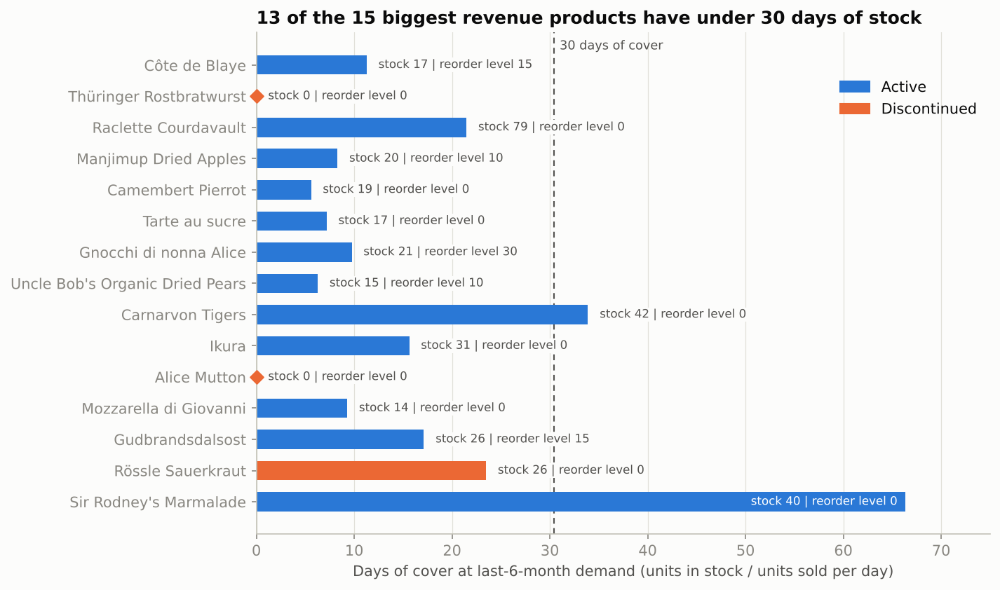
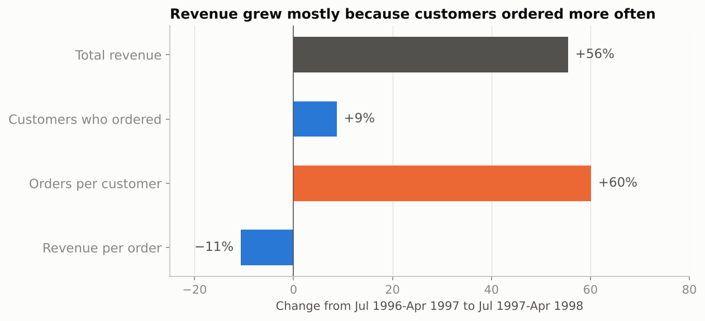
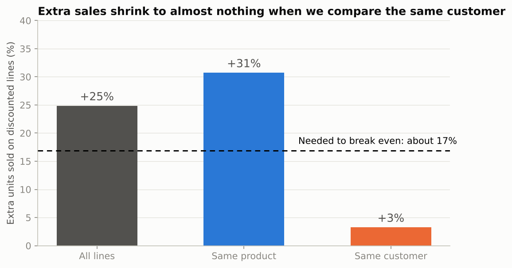
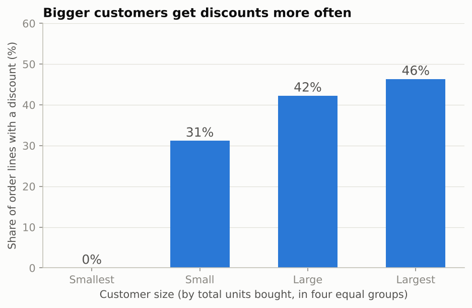

Northwind: three questions about stock, growth and discounts
Northwind is a food wholesaler. Its database has 830 orders (2,155 order lines) from July 1996 to early May 1998, from 91 customers (89 of them ever ordered), for 77 products from 29 suppliers. I asked three plain business questions the data can answer. Each section says why it matters, what I did, what I found, and what Northwind should do. Every number and chart comes from the Python code in the GitHub repository.
Three things to know first
- Prices rose 25% on 7 April 1997. To stop that from looking like growth, "revenue" in Question 2 values every sale at today's list price. A sale is then worth the same in 1996 as in 1998.
- May 1998 is left out because the data stops on 6 May. All time periods end in April 1998.
- There is no cost data, so everything is about revenue, not profit.
Are reorder levels set sensibly, and which best-selling products are most at risk of running out?
Why it matters
A reorder level is the stock count that triggers a new order. If it ignores how fast a product sells, popular items run out and sales are lost. The company's revenue is concentrated in a few products, so a stock-out on one of them hurts.
What I did
I measured how fast each product sold: its average units per month over the last six full months (Nov 1997 to Apr 1998). Dividing current stock by that gives "days of cover", meaning how many days the stock would last at that pace. I then checked whether products that sell more also have higher reorder levels. I used a correlation, a number from −1 to +1 where 0 means no relationship.


| Measure (last 6 full months) | Value |
|---|---|
| Correlation between demand and reorder level | −0.01 (no relationship) |
| Products with a reorder level of 0 | 24 of 77 (41.8% of revenue) |
| Typical days of stock left (median) | 19.7 |
| Products with under 30 days of stock | 45 of 77 (80.3% of revenue) |
| Products that make up half of revenue | 11 |
| Discontinued products still selling | 8 (13.7% of revenue) |
Main finding
Reorder levels have no connection to how fast products sell. 24 products have a reorder level of zero, and together they bring in 41.8% of revenue. Of the 15 best-selling products, 13 have less than 30 days of stock left. Only one product is below its reorder level with nothing on order, so staff are following the rule. The rule itself is the problem.
What Northwind should do
Set each reorder level from how fast the product sells, for example "enough stock for 30 days plus a safety margin". Start with the 11 products that make up half of revenue. Review the 8 discontinued products separately, since they still bring in 13.7% of recent revenue.
Limits. The stock numbers are one snapshot with no date, so "days of cover" assumes the past pace continues. There is no supplier delivery-time data, so "under 30 days" is a warning sign, not proof that a product will run out. The result barely changes if demand is measured over 3 months or all time instead of 6 months.
Where did revenue growth come from: more customers, more orders per customer, or bigger orders?
Why it matters
Each source of growth needs a different plan. Winning new customers, getting existing customers to order more often, and growing the size of each order are different jobs. Knowing which one drove past growth shows what to protect and what is not working.
What I did
I compared two ten-month periods: July 1996 to April 1997, and July 1997 to April 1998. Revenue is simply customers × orders per customer × revenue per order. So if I measure how each of those three changed, I can see which one explains the growth. I also looked at only the 42 customers who were already ordering by September 1996, to check that growth did not come only from newcomers.


| Jul 1996 – Apr 1997 | Jul 1997 – Apr 1998 | Change | |
|---|---|---|---|
| Revenue (constant prices) | $487,316 | $757,909 | +56% |
| Customers who ordered | 80 | 87 | +9% |
| Orders per customer | 3.4 | 5.5 | +60% |
| Revenue per order | $1,772 | $1,582 | −11% |
Main finding
Growth came from customers ordering more often (+60%), not from more customers (+9%) or bigger orders (orders actually got 11% smaller). The same pattern shows up among the 42 customers who were already ordering in 1996: their orders per customer rose 53% and their order size fell 8%. They account for 44.5% of the growth. The rest came from customers who first ordered after September 1996 and were still ramping up. 84 of the 89 customers who ever ordered had already ordered by mid-1997, so the customer base had mostly filled in by then.
What Northwind should do
Protect order frequency, especially among the biggest accounts. The top 10 customers account for 44.5% of revenue over the whole period, so losing a few would hurt. Do not assume new customers will keep driving growth, since few joined recently. The drop in order size is worth watching, because it means each order is worth less.
Limits. This describes what happened and does not prove why. Two ten-month periods are a small sample, and a handful of large customers have a big influence. There is no data on marketing or sales effort, so I can't say what made customers order more often.
Do discounts bring in enough extra sales to be worth the revenue they give up?
Why it matters
A discount lowers the price on every unit, including units the customer would have bought anyway. It only pays off if it sells enough extra units to make up for that. For example, a 15% discount needs about 18% more units just to break even.
What I did
38.9% of order lines have a discount, averaging 14.4% off. That gave up $88.7K, or 6.5% of the $1.35M the same sales would have brought in at full price. To see if discounts sold more units, I compared the average units per order line on discounted lines against full-price lines, three ways. First, all lines together. Second, the same product: for each product, discounted versus full-price lines, then averaged. Third, the same customer: the same idea, but for each customer. The last two make sure we are comparing like with like.



| Comparison | Extra units on discounted lines | Likely range* |
|---|---|---|
| All lines | +25% | +14% to +34% |
| Same product (69 products) | +31% | +23% to +49% |
| Same customer (52 customers) | +3% | −2% to +16% |
| Needed to break even | about +17% |
*Range from re-running the comparison on 300 random resamples of the orders. It shows how much the number could move by chance.
Main finding
Discounted lines do sell more units, about 25% more on average. But part of that is because big customers get discounts most often (31%, 42% and 46% of lines for the three larger customer groups, and none for the smallest) and big customers simply buy more. When I compare the same customer against itself, the extra sales shrink to about 3%, well below the roughly 17% needed to break even. Under that comparison discounts cost about $70K in revenue. Under the same-product comparison (+31%) they would have gained about $53K. The truth depends on which comparison is closer to the real effect of the discount, and this data can't settle that.
What Northwind should do
Don't count on discounts to pay for themselves. If they continue, test them: offer a discount to a random half of similar customers and compare. That is the only way to separate "the discount worked" from "these customers already buy a lot".
Limits. This shows association, not cause: Northwind did not hand out discounts at random. There is no cost or profit data. The same-customer comparison only covers customers with enough discounted and full-price lines, so it uses 52 of the customers.
Source: Northwind database PDF, extracted to CSV by src/extract_data.py. Reproduce everything with python src/run_all.py; instructions are in the repository README.